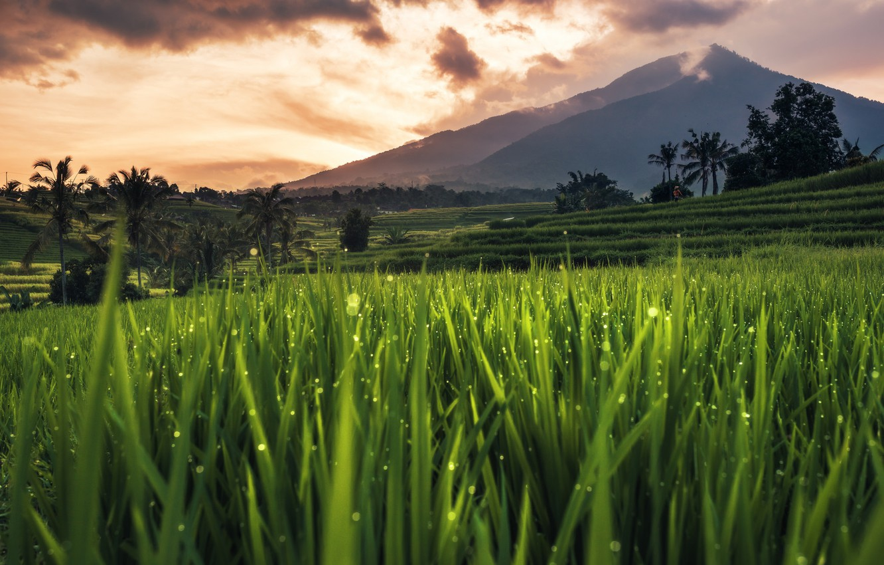
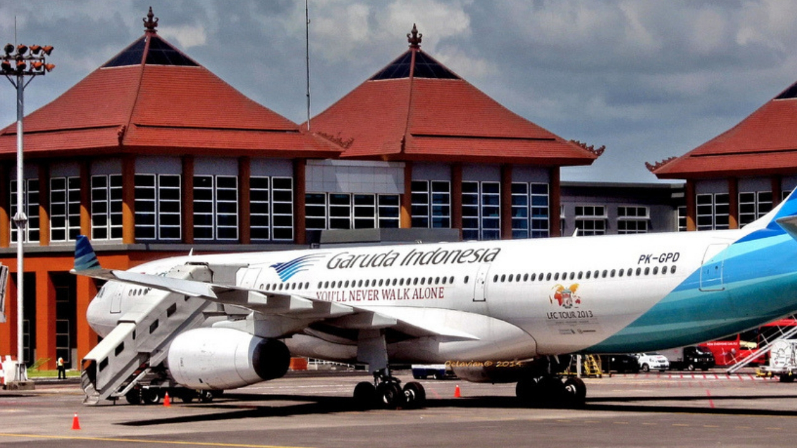
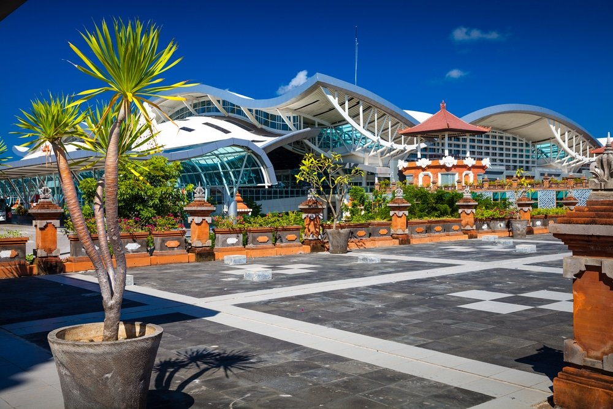
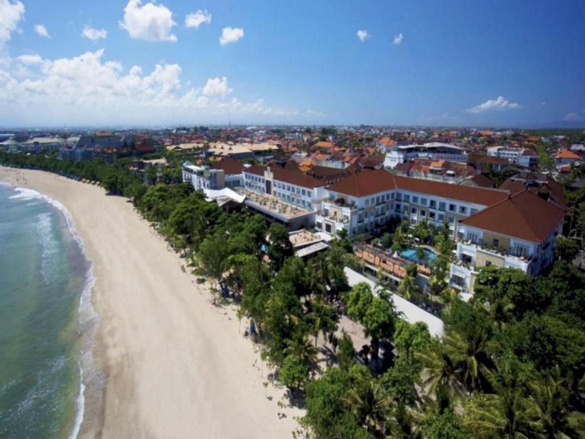
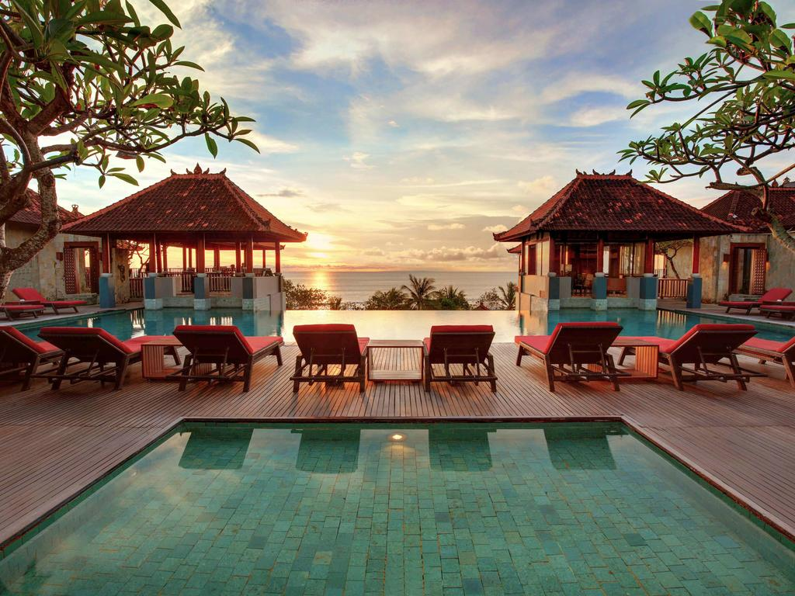
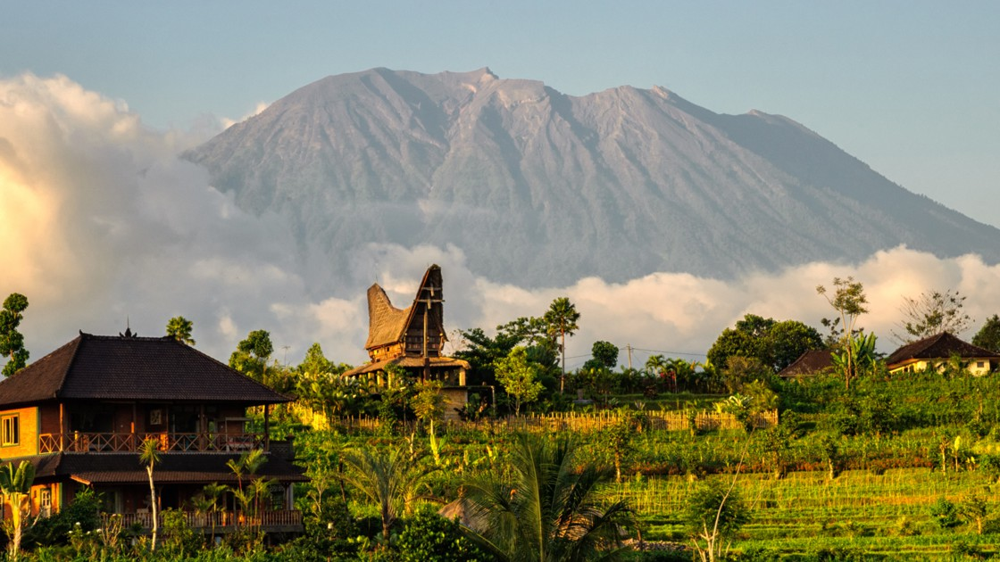
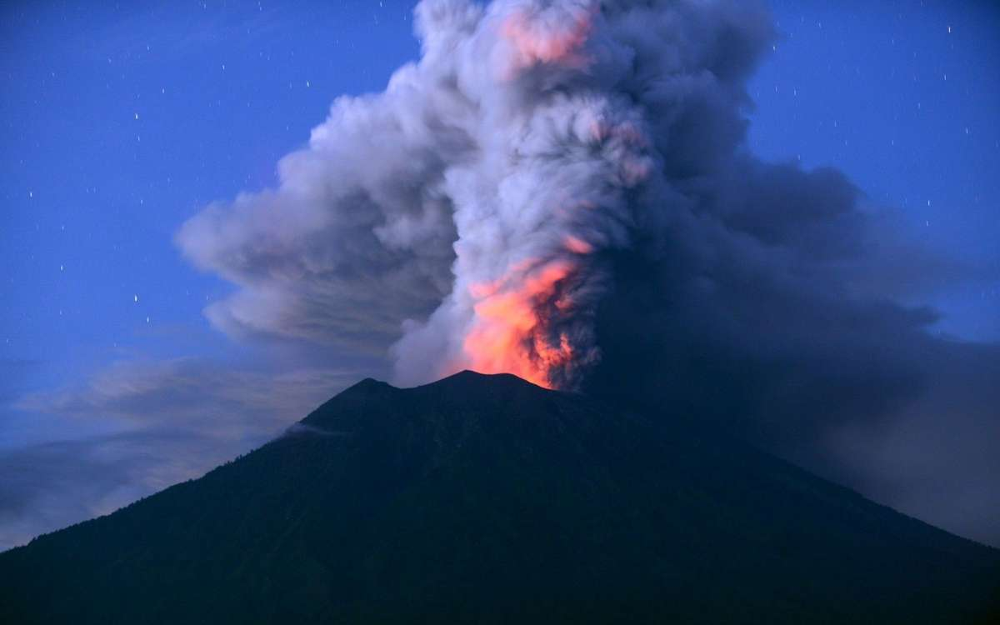
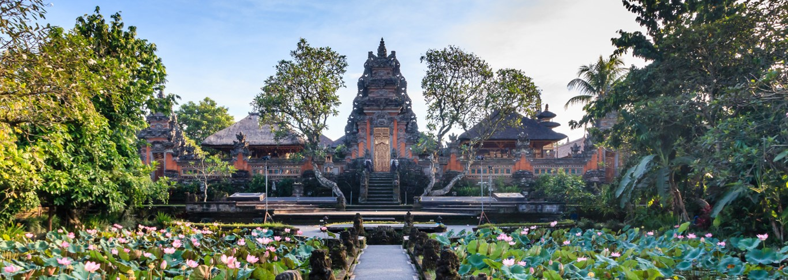
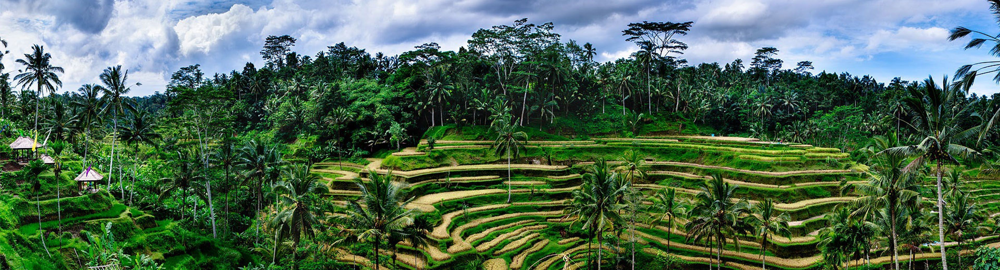

1 / 10

2 / 10

3 / 10

4 / 10

5 / 10

6 / 10

7/ 10

8 / 10

9 / 10

10 / 10

Île du Sud de l’Indonésie, située entre Java et Lombok, Bali est une île possédant un relief dissymétrique avec des montagnes qui sont pour la plupart des volcans tels que le mont Agung (3142m), le mont Batur (1717m) ou encore le mont Catur (2098m), ces volcans sont situés pour la plupart au Nord l’ïle.Tandis que le nord est peu peuplé ; la culture principale y est le maïs, base de la nourriture. La majorité de la population habite le sud. cette population est établie sur les interfluves, en villages (banjar) fermés, de murs de brique ou de boue séchée ; les bâtiments de chaque habitation sont, eux-mêmes, enfermés dans des murs, le long de rues étroites.
Capitale de l'île de Bali , Denpasar est une étape incontournable d'un voyage à Bali pour explorer l'île dont la renommée n'est plus à vanter. Partagée entre tradition et modernité, cette ville est recommandée à tous les voyageurs souhaitant rester à l'écart des grands sites touristiques, tout en maintenant le confort d'une grande ville. Denpasar est une ville au riche passé historique. De nombreuses traces physiques, linguistiques et éthiques y témoignent d'une ancienne présence étrangère. On peut citer, à titre d'exemple, les inscriptions séculaires de Blanjong et les découvertes à Sanur.Denpasar fut également l' ancienne capitale du royaume de Badung. Visiter celle-ci, c'est un peu comme découvrir l'histoire du pays tout entier.Ses contours furent tracés par les colons néerlandais au début du XXème siècle. À l'aspect traditionnel du village aux maisons princières et brahmaniques , les Hollandais superposèrent les structures minimales d'un gouvernement moderne, notamment en édifiant des bureaux de poste, des écoles, des commissariats de police, etc. En dépit de tout cela, l'urbanisation peut être encore considérée comme lente. Ce n'est qu'à partir de 1958, date à laquelle Denpasar devint la capitale de Bali , que tout s'accéléra. Un aéroport fut érigé et les infrastructures hôtelières commencèrent à affluer. Cette ville est une parfaite illustration de la nouvelle Indonésie. Effectivement, en très peu de temps, ce qui ne fut qu'un petit centre administratif de l'empire colonial, devient, au lendemain de l' Indépendance indonésienne , une grande métropole abritant plusieurs milliers d'habitants.
L'aéroport international Ngurah Rai (code AITA : DPS • code OACI : WADD) est l'aéroport de Denpasar, la capitale de la province indonésienne de Bali. Il est situé à 15 km au sud de la ville. Son nom est un hommage au héros national d'Indonésie, I Gusti Ngurah Rai, tué au combat durant la Guerre d'indépendance. Ngurah Rai est le 3e aéroport indonésien en nombre de passagers après Soekarno-Hatta de Jakarta et Juanda de Surabaya, et le premier point d'entrée du pays en nombre d'arrivées de visiteurs étrangers.
Vue de l'exterieur de l'aéroport international Ngurah Rai
Kuta est une zone touristique dotée d'une plage. Elle se trouve au sud de l'île de Bali, en Indonésie. Faisant partie des premiers complexes touristiques bâtis à Bali, elle est davantage connue pour son ambiance principalement festive et la possibilité de pratiquer le surf sur l'océan Indien. Les longues vagues régulières de Kuta font de celle-ci un spot de surf plébiscité, en particulier pour les débutants. De nombreux magasins proposent des planches à la location et des cours de surf.
Magnifique vue sur l'Océan à Kuta.
L'Agung ou mont Agung, en indonésien Gunung Agung, littéralement en français « montagne suprême », est un volcan d'Indonésie situé sur l'île de Bali dont il constitue le point culminant avec 2 995, 3 031 ou 3 142 mètres d'altitude. Stratovolcan conique aux pentes régulières et escarpées, il est couronné par un cratère. Pour les Balinais hindouistes, il est considéré comme le fils du Semeru de Java qui est lui-même le fils du mont Meru de l'hindouisme.
Le Mont Agung en éruption en 2017.
Ubud, située sur les hauts plateaux de Bali en Indonésie, est une ville réputée pour son artisanat et ses danses traditionnels. La forêt tropicale et les rizières en terrasse parsemées de temples et de sanctuaires hindous entourant le district d'Ubud font partie des paysages les plus célèbres de Bali. Les anciens lieux saints comprennent les temples de Tirta Empul, Goa Gajah ("cave de l'éléphant") et ses fines sculptures, ainsi que Gunung Kawi et ses sanctuaires creusés dans la roche.
Rizière d'Ubud